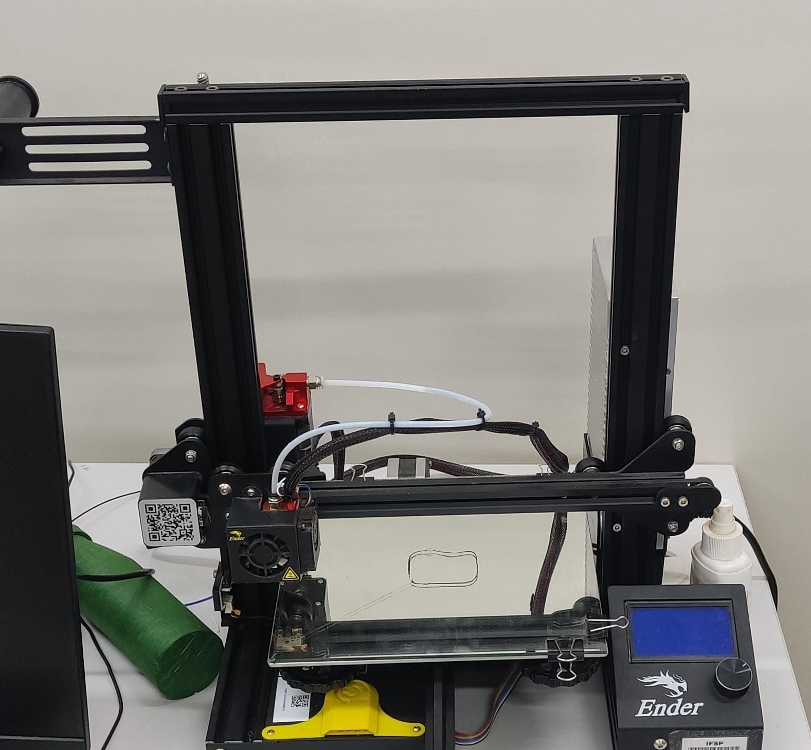
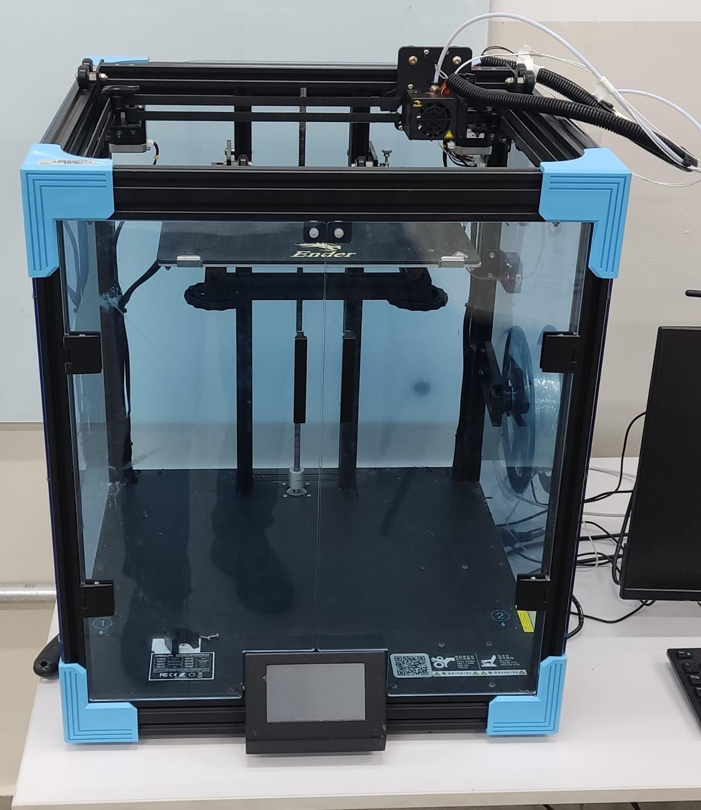

Impressão 3D
Você modela a peça e o laboratório imprime em filamento. A escolha do material depende do que a peça precisa aguentar, como a temperatura: há PLA, PETG e outros. O laboratório mantém filamentos novos nas prateleiras e um armário com filamentos para reutilização.